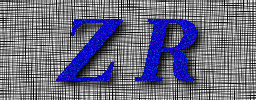

|  | build_zr_table Generate the ZR table from command line parameters for Stratiform and Convective raintypes. |
[-h | --help]
Note:
-k, -a, and -t
should be entered together. And the number
of parameters should match. (xn, yn, tn) defines a triplet
of (k, a, and raintype) that specify the function: R=kZ^a.
Currently, specify both x1 and x2, or y1 and y2 or t1 and t2.
Currently,
-t is not implemented, but, the rain types Stratiform
and Convective are known (hard coded) and the order
shown as the default is accurate: t1 = Stratiform
and t2 = Convective.
Soon to be implemented:
-k x1 -k x2 ... -k xn
-a y1 -a y2 ... -a yn
-t t1 -t t2 ... -t tn
The -site parameter, by default, uses the
file /usr/local/trmm/GVBOX/data/gv_radar_site_info.data to determine the
latitude and longitude of the radar site. Diagnostic messages are
produced, if the site cannot be found or the gv_radar_site_info.data file
cannot be found.
-h | --help]
-> HELP. Print this usage.
Note:
-k, -a, and -t
should be entered together. And the number
of parameters should match. (xn, yn, tn) defines a triplet
of (k, a, and raintype) that specify the function: R=kZ^a.
Currently, specify both x1 and x2, or y1 and y2 or t1 and t2.
Currently,
-t is not implemented, but, the rain types Stratiform
and Convective are known (hard coded) and the order
shown as the default is accurate: t1 = Stratiform
and t2 = Convective.
Soon to be implemented:
-k x1 -k x2 ... -k xn
-a y1 -a y2 ... -a yn
-t t1 -t t2 ... -t tn